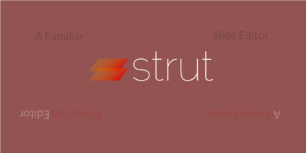

Impress.js

This is the most flexible generator. Impress allows you to set up complex transitions between slides (zooming, rotating, scaling) in the overview mode.
Bespoke.js
For those in a rush, Bespoke is great because it offers several stock transitions in the overview mode.
Handouts
This one is pretty self explanatory. This generator lets you create handouts that you can print out and give to your audience.